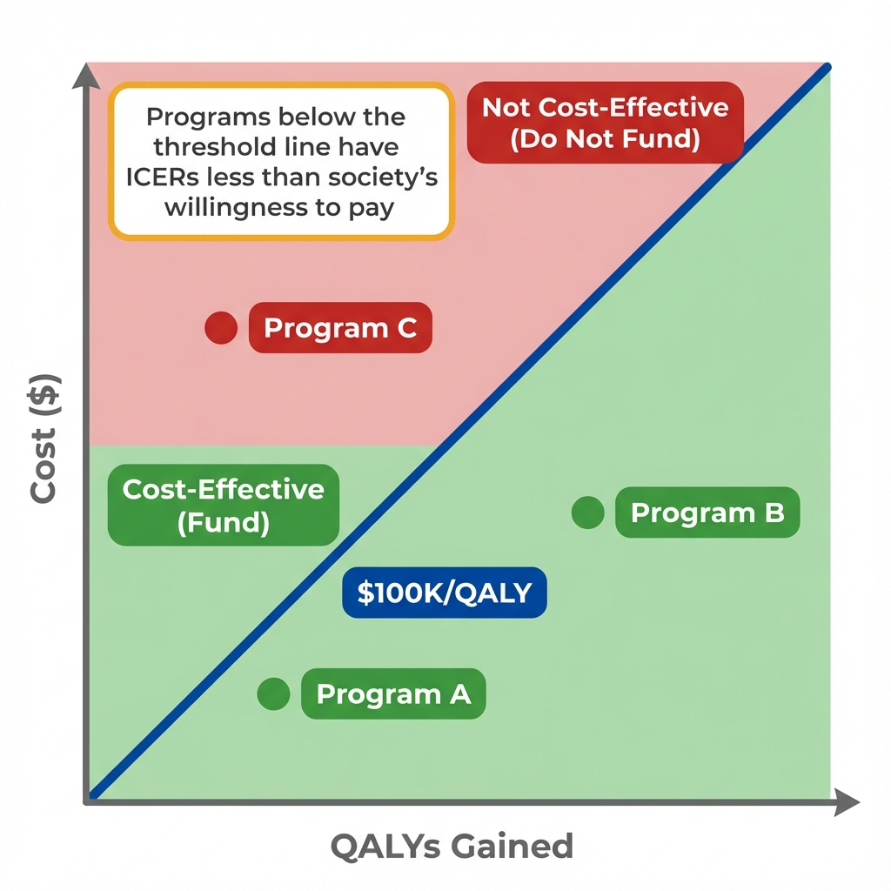

The Data
A health department is evaluating six programs to reduce cardiovascular disease. Each program has a different cost and produces different health gains measured in quality-adjusted life years (QALYs). Which programs are worth funding? (Data are simulated for illustration.)
Program Cost vs Health Gains (QALYs)
Statistical significance isn't enough.
A program might significantly improve health, but if it costs $2 million per QALY gained, is it worth it? We need a benchmark to decide.
Thresholds Explained
A willingness-to-pay (WTP) threshold is the maximum amount a decision-maker is willing to pay for one additional unit of health benefit. It converts an ICER into a yes/no funding decision.

The WTP threshold creates a decision rule: fund programs below the line.
The threshold isn't just technical; it's political.
What if we use $50,000 instead of $150,000? The same data could lead to completely different funding decisions.
Interactive Threshold
Move the threshold slider to see how many programs become "cost-effective" at different willingness-to-pay values. The choice of threshold can dramatically change which programs get funded.
Notice how sensitive decisions are to the threshold.
But we've been treating ICERs as if they're certain. What happens when we account for uncertainty in our estimates?
Uncertainty
Cost and effectiveness estimates have uncertainty. Instead of asking "Is the ICER below the threshold?" we ask "What's the probability the ICER is below the threshold?" This is what cost-effectiveness acceptability curves (CEACs) show.
Uncertainty doesn't disappear; it gets quantified.
Instead of a binary decision, we get a probability. But someone still has to decide what probability is "good enough" to fund a program.
Key Insight
Cost-effectiveness thresholds bridge the gap between evidence and decision-making. They don't eliminate judgment calls; they make the judgments explicit and consistent across decisions.
Why not just fund everything that works?
Budgets are finite. Funding one program means not funding another. Thresholds force us to consider opportunity costs: what health benefits are we giving up elsewhere?
Is $100,000 per QALY the "right" threshold?
There is no objectively correct threshold. It reflects what society is willing to pay for health, which is ultimately a value judgment, not a technical calculation.
What about equity considerations?
Standard CEA treats all QALYs equally. Some argue we should weight QALYs for disadvantaged populations more heavily, which would lower the effective threshold for equity-focused programs.
Does the UK approach work for the US?
NICE uses explicit thresholds in a single-payer system. The US has fragmented payers with different willingness-to-pay, making uniform thresholds harder to apply.
Concepts Demonstrated in This Lab
Key Takeaway
"Statistically significant" and "cost-effective" answer different questions. Statistical significance asks whether an effect is real. Cost-effectiveness asks whether the effect is worth paying for. A program can be highly effective in absolute terms but still not worth funding if the cost per unit of health gain exceeds what society is willing to pay. The threshold makes this trade-off explicit.